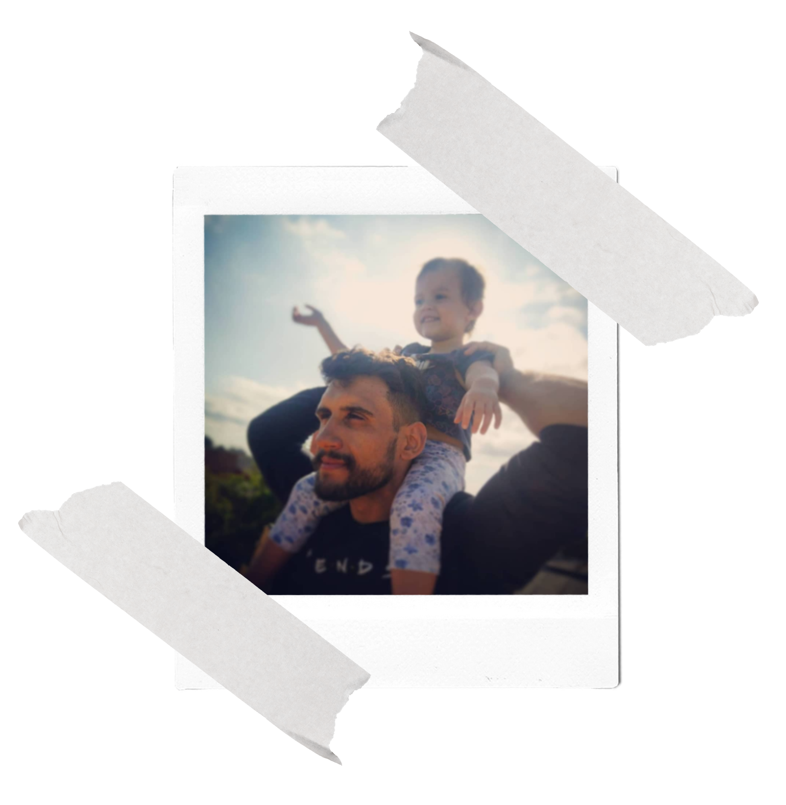

Olá! Seja bem vindo à minha página
Quem sou eu?
Me chamo Marcos Wrobel, sou um Professor de Filosofia(❓) que tem o maior prazer em falar de conceitos complexos para jovens entusiasmados e que, no ano de 2021, viu sua vida convergir novamente para um mundo que não lhe pertencia mais: o da Programação!
Formação
Formado em Licenciatura em Filosofia pela Instituição de Ensino Superior Sant'Ana, atuo como professor de Filosofia e Pensamento Computacional pela Secretária de Educação e Esporte do Paraná (SEED-PR) em Tibagi, uma cidadezinha do interior o Estado.
Objetivo
Meu objetivo como educador é ajudar a construir uma sociedade que pensa e age sobre a sua própria
realidade.
